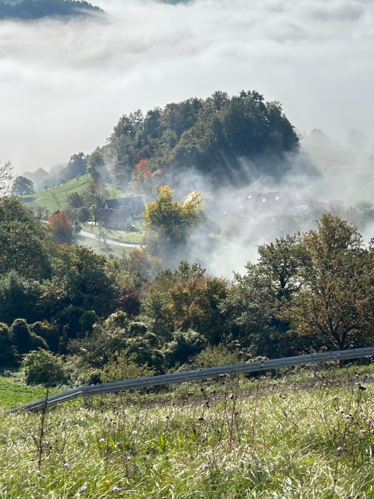
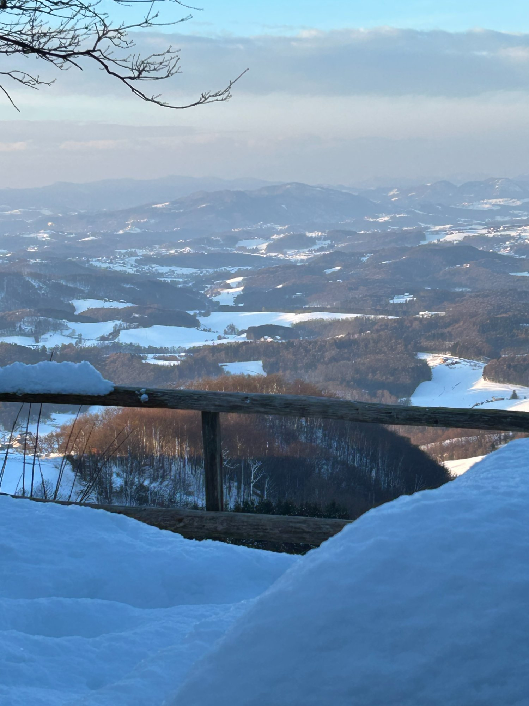
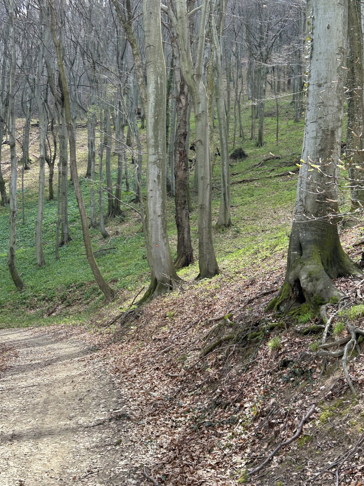

Zahtevna🏔 Hribovska
01
Muzej na prostem – Rudijev dom na Donački Gori – Stoperce – Dvorec Strmol
Kolesarska tura, ki združi dve največji znamenitosti Rogatca z vzponom na razgledni Rudijev dom na Donački Gori. Po travnatih grebenih z razgledom na Boč, Donačko Goro in Haloze do Stoperc in nazaj do Dvorca Strmol.
24,5 kmRazdalja
↑ 1035 mVzpon
228–622 mVišina